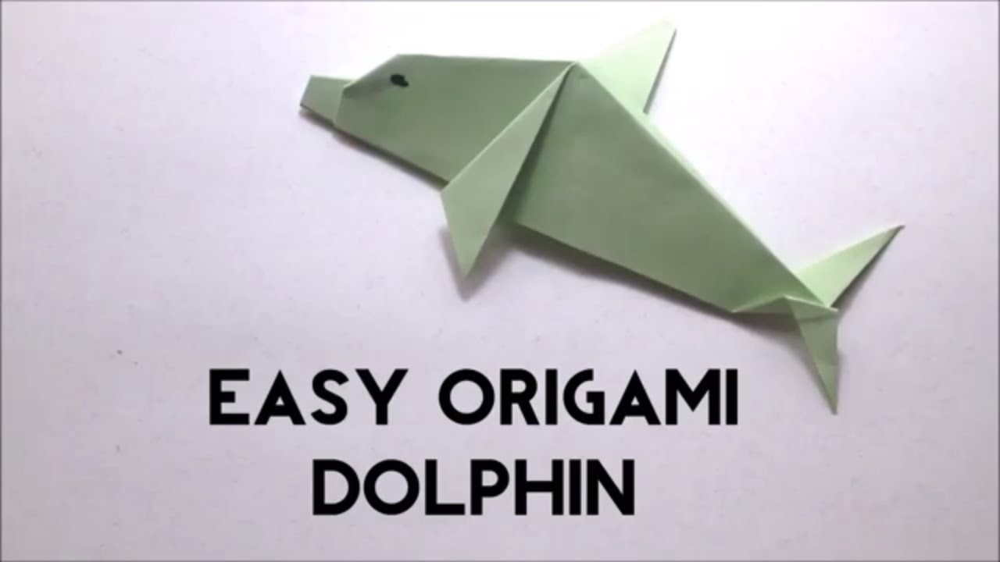

Origami Designs
About Us
Follow Us
Origami is the art of paper folding, which is often associated with Japanese culture. In modern usage, the word "origami" is used as an inclusive term for all folding practices, regardless of their culture of origin.
Origami is derived from two Japanese words: Ori (folded) and Kami (paper). Before that, the art was called “orikata” (folded shapes).
No scissors allowed! Traditional origami uses a piece of paper in the shape of a square.
Let's learn making some Origami designs!
1. Elephant

Interesting Facts about Elephant!
- They're the world's largest land animal.
- You can tell the two species apart by their ears.
- Their trunks have mad skills.
- Their tusks are actually teeth.
- They've got thick skin.
- Elephants are constantly eating.
- They communicate through vibrations.
- Calves can stand within 20 minutes of birth.
2. Rhinoceros

Interesting Facts about Rhinoceros!
- There are 5 species of Rhino.
- They're HUGE.
- Black and white rhinos are both, in fact, grey.
- They're called bulls and cows.
- Their horn is made from the same stuff as our fingernails.
- Rhinos have poor vision.
- Javan rhinos are only found in one small place.
- They communicate through honks, sneeze and poo.
3. Dholphin

Interesting Facts about Dolphin!
- Dolphins can be found all over the world and in different environments..
- Underwater noise pollution is a real threat to dolphins.
- They're fast sprinters.
- Dolphins are chatty animals.
- They're intelligent, like us.